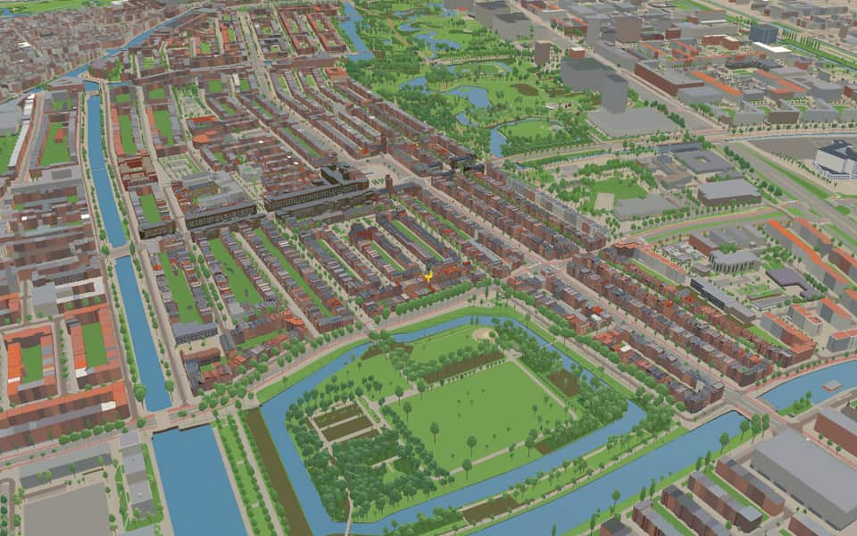
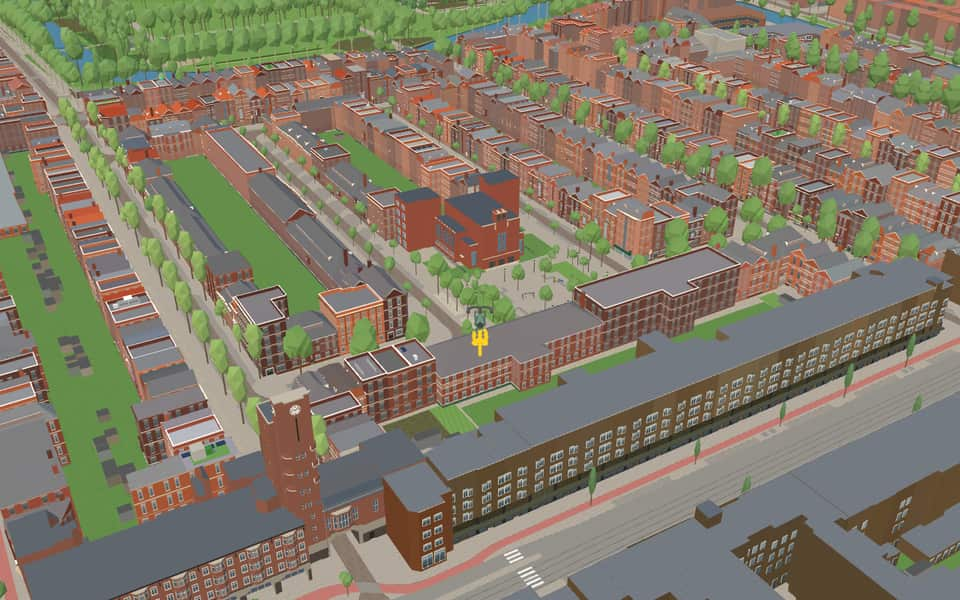
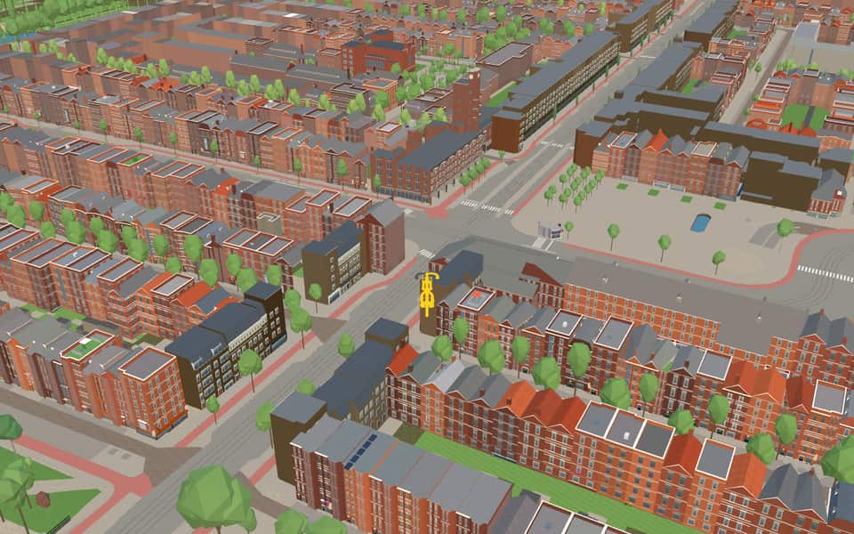
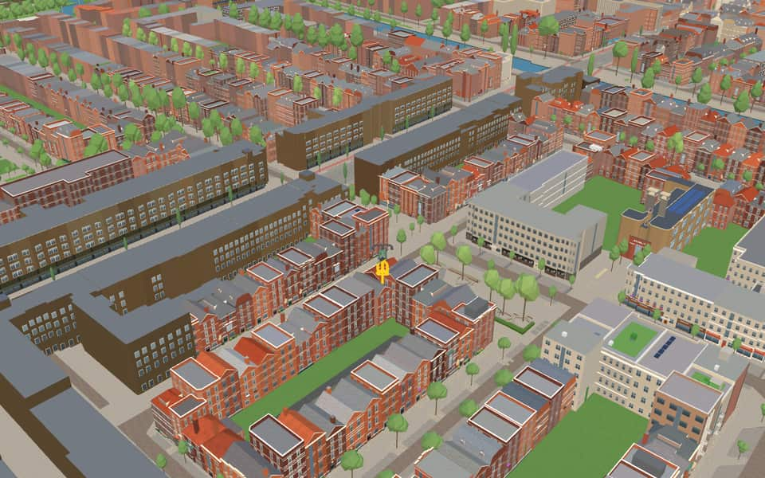

Neighbourhood in De Baarsjes
Van Galenbuurt
Planners originally intended to call it Nieuwe Westerkerk before choosing its final name. Wikipedia (translated from Dutch)
The name. The name matches Jan van Galenstraat, in the area. Fleet commander (1604-1653), killed in the Battle of Livorno against the English. Gemeente Amsterdam street-name register
Ride Van Galenbuurt6 modelled buildings · 315 kit buildings · 7 facts · 14 name stories


In the game
Frames from a ride through Van Galenbuurt.




6 more photos of Van Galenbuurt

.jpg){kind=link}

.jpg){kind=link}


.jpg){kind=link}


Built here
Buildings modelled one by one for the ride.
Jeruzalemkerk
Mercatorplein north tower
- No picture yet
Jan Evertsenstraat 142 to 94 (25 houses)
Jan Evertsenstraat 92 to 68 (10 houses)
- No picture yet
Jan Evertsenstraat 160 to 152 (5 houses)
- No picture yet
Jan Evertsenstraat 150 to 146 (3 houses)
Drawn from the building kit
315 buildings here use one of the game's reusable post-war building designs, fitted to their real footprint. See every design.
- Per 6 m pand three white two-light windows with top lights on every upper storey, two ground windows and a door pair at the mirrored pair's shared entrance; variants for the brown Van Spilbergenstraat rows 146
- Per 6 m pand a wide four-light window and a narrow window on every upper storey, a wide ground window under a thin white canopy 116
- A parabolic arched portal on every second party line under a brick lisene with a ladder relief, one wide five-light window per upper storey 53
Did you know
Trivia the ride can show you here.
- The Jeruzalemkerk runs north–south, unlike most churches, which face east–west. Wikipedia (translated from Dutch)
- The Jeruzalemkerk was first going to be called the Nieuwe Westerkerk. Wikipedia (translated from Dutch)
- Architect Jantzen built the Jeruzalemkerk onto houses on purpose, to express that God wants to live among people. Wikipedia (translated from Dutch)
- JeruzalemkerkThe name Jeruzalemkerk honors Jerusalem, a city without a temple since the year 70. nl.wikipedia.org
- JeruzalemkerkArchitect Jantzen deliberately attached the structure directly to existing houses to symbolize God living with people. nl.wikipedia.org
- Jan van GalenstraatA viaduct with ramps opened for northbound traffic in 1969 and southbound traffic in 1972. nl.wikipedia.org
- Jan van GalenstraatTram line 13 has been running through this street since 1989 between Jan Tooropstraat and the subway station. nl.wikipedia.org
Names on the map
Where the canal, bridge and street names come from.
Streets
- AdmiralengrachtA collective name for the admirals from Holland and Zeeland after whom the streets in the surrounding neighbourhood are named.
- HoofdwegThe former municipality of Sloten gave the name for its function: a wide central main road (hoofdweg). After the annexation of 1921 the road was extended north to the Bos en Lommerplein.
- James CookstraatEnglish explorer (1728-1779) whose discoveries include the east coast of Australia.
- Jan MaijenstraatThe Dutch navigator Jan Cornelisz May, who in 1611 discovered the Jan Mayen island named after him, between Spitsbergen and Iceland.
- Jan van GalenstraatFleet commander (1604-1653), killed in the Battle of Livorno against the English.
- John FranklinstraatEnglish naval officer (1786-1847) who explored the Northwest Passage, but whose expedition perished in the polar ice.
- Marco PolostraatVenetian traveller (1254-1323), who spent a quarter of a century among the Chinese and is known for his travel accounts.
- MercatorstraatFlemish geographer and cartographer whose real name was Gerard Kremer (1512-1594), who drew the first world map in cylindrical projection.
- OrteliuskadeAbraham Ortelius (1527-1598), Flemish geographer, maker of a famous atlas.
- OrteliusstraatAbraham Ortelius (1527-1598), Flemish geographer, maker of a famous atlas.
- ShackletonstraatSir Ernest Henry Shackleton (1874-1922), Irish-born British Antarctic explorer, whose Nimrod expedition sent the first party to reach the South Magnetic Pole, in 1909.
- TorresstraatLuis Vaez de Torres (flourished 1606), Spanish navigator, who in 1606 sailed through the strait named after him, the Torres Strait between Australia and New Guinea.
2 more streets with a story
- VancouverstraatGeorge Vancouver (1757-1798), English navigator, the first to sail round the island named after him, Vancouver Island (off the west coast of Canada).
- VespuccistraatAmerigo Vespucci (1454-1512), Florentine explorer, who sailed along and described the coasts of America. That is probably why America is named after him and not after Columbus.
1 other street without a recorded story
Jan Maijenplein